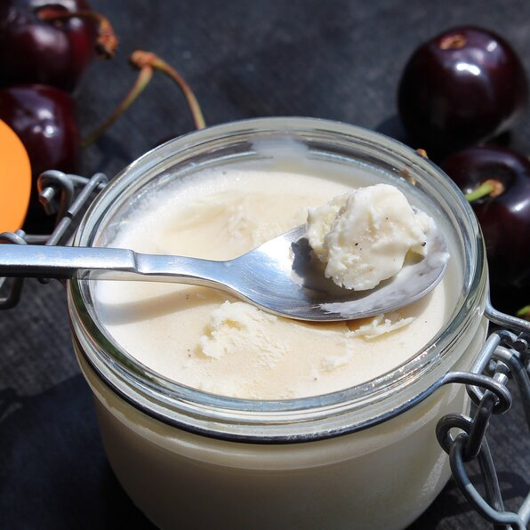

2-Ingredient Ice Cream
Description
This is the easiest recipe for ice cream I have found. Add any extra ingredients (chocolate chips, caramel, vanilla bean, etc.) before freezing!
- Prep: 10 mins
- Additional: 6 hrs
- Total: 6 hrs 10 mins
- Servings: 4
- Yield: 4 servings
Ingredients
- 1 pint heavy whipping cream
- 1 (14 ounce) can sweetened condensed milk
Directions
- Beat heavy cream in a bowl using an electric mixer until soft peaks form; add sweetened milk and beat until thick and well combined.
- Transfer mixture to a shallow container and cover with plastic wrap; freeze until solid, about 6 hours.